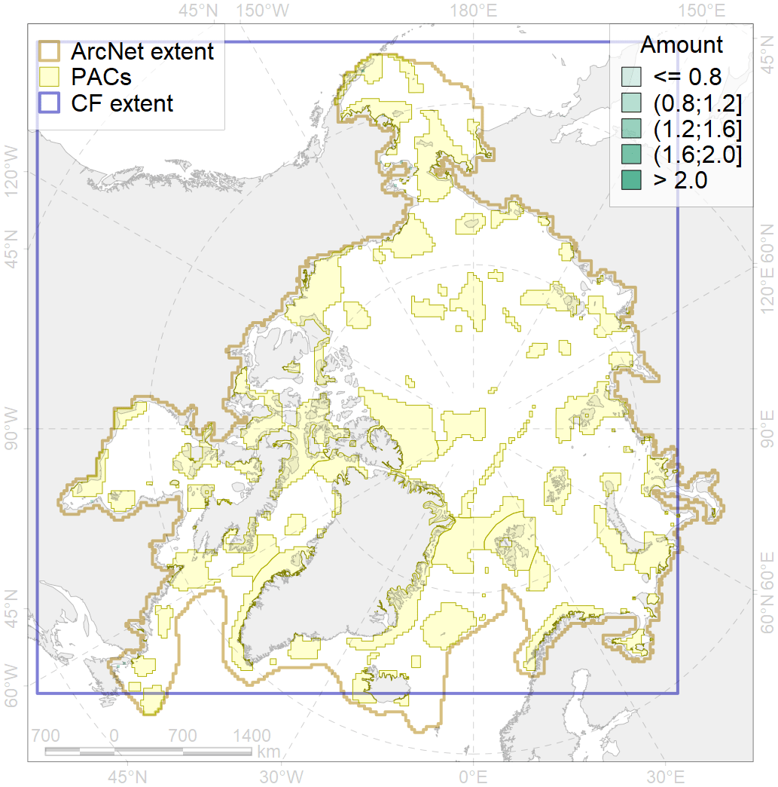
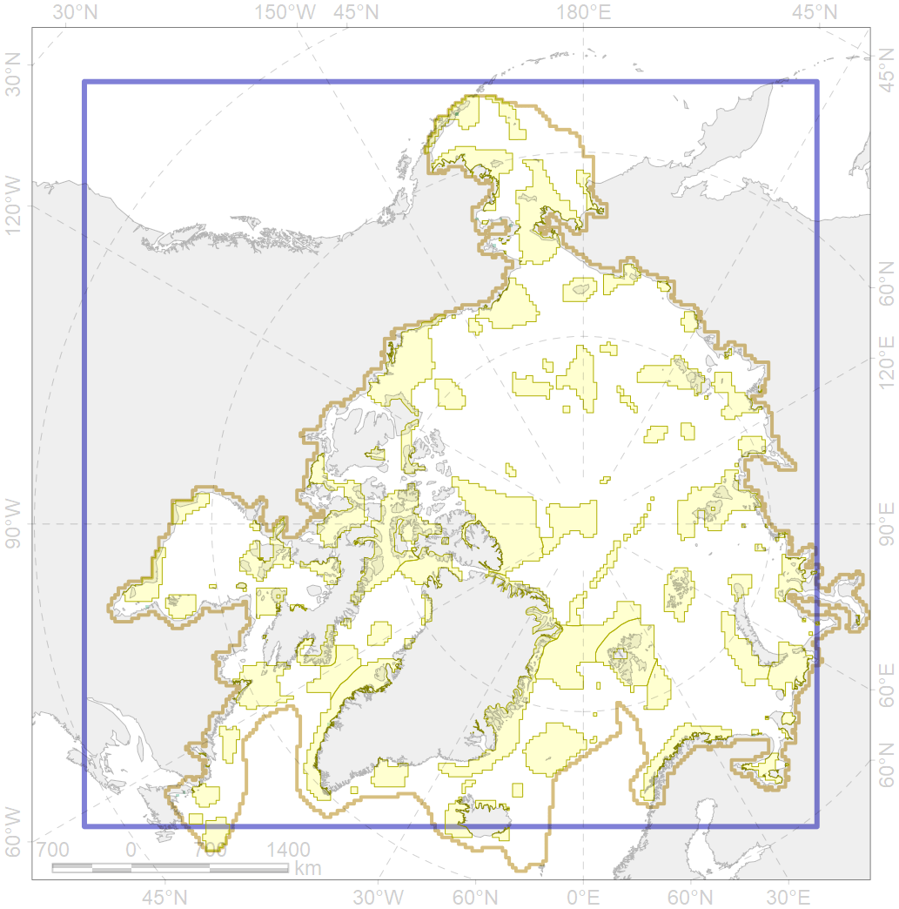

7247

| CF ID | 7247 |
| CF Name | seagrasses of the High Arctic |
| Time Period | 1934-2015 |
| Source(s) | UNEP-WCMC, Short FT (2018). Global distribution of seagrasses (version 6.0). Sixth update to the data layer used in Green and Short (2003). Cambridge (UK): UN Environment World Conservation Monitoring Centre. URL: http://data.unep-wcmc.org/datasets/7 ; U. Simakova, own data |
| Seasonality | January - December |
| Depth Horizon | Sea floor and water column above |
| Methodology | This dataset was created from multiple sources (in 128 countries and territories), including maps (of varying scales), expert interpolation and point-based samples. Before inclusion in the dataset, occurrence records were reviewed using published reports, peer-reviewed literature and expert consultation. |
| Author Name | V. Spiridonov |
| Notes | |
| Conservation Target Set in the Scenario | 0.3 |
| Conservation Target Achieved in the Scenario | 0.546 (Scenario: 181.9%) |
| PAC ID | Proportion in the PAC | Contribution to ArcNet Target Achievement | PAC’s Contribution to the Achieved Target |
|---|---|---|---|
| 1 | 12.5% | 41.7% | 22.9% |
| 3 | 12.5% | 41.7% | 22.9% |
| 4 | 6.2% | 20.6% | 11.3% |
| 25 | 6.2% | 19.0% | 10.4% |
| 27 | 12.5% | 37.9% | 20.8% |
| 44 | 6.2% | 20.8% | 11.5% |
| inner | 56.2% | 181.7% | 99.9% |
| outer | 43.8% | 0.2% | 0.1% |